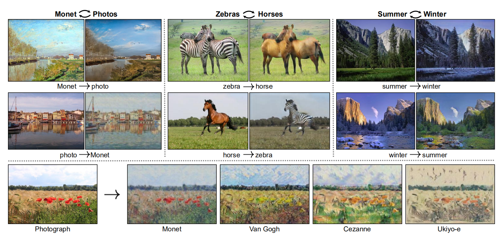
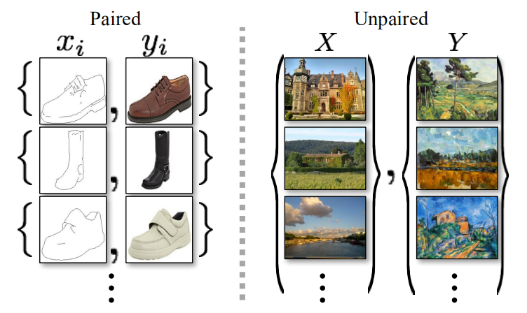
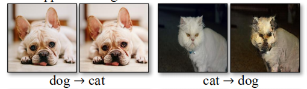

GAN+循环一致性=CycleGAN
图像翻译（image-to-image translation）是CV领域内的一类任务。图像翻译任务需要找出来自不同域（domain）的图片相互之间
的映射函数，通常采用匹配的数据集训练神经网络。但在实际许多情境下，找到匹配的数据集是一件十分困难的事。
CycleGAN是一个基于GAN的图像翻译模型，它的优点在于不需要使用匹配的数据集也能完成效果不错的图像翻译任务，其创新之处体现在
训练GAN时引入了循环一致性损失。设G是由X至Y的映射，F是由Y至X的映射，传统的GAN训练时需要满足\(G(X)\approx{Y}\)与
\(F(Y)\approx{X}\)，而CycleGAN在此之外，还要满足\(F(G(X))\approx{X}\)与\(G(F(Y))\approx{Y}\)。引入循环一致性误差对
生成图片质量的提升是显著的，下图展示了CycleGAN在迁移任务上的效果：

图像翻译模型可以做什么？设想你在夏天去爬山，拍了一张风景图，然后盯着这张照片，便可以在脑海里想象出冬天这里的风景图。现在，
只需要一个图像翻译模型便可生成出想象中的图片。如何实现图像翻译功能？考虑一个问题：人脑是怎么做到想象的？可能会回答，因为人经历过许多个冬天，于是便能将别处的冬天迁移到此地的冬天了。类比到计算机身上，只需要准备一个全是夏天景色的数据集，再准备一个
全是冬天景色的数据集，让神经网络去学习夏天与冬天间的映射关系，就能让模型具备想象能力了。这就是图像翻译的解决思路。
先前的模型通常使用匹配的（paired）数据集，但由于实际中匹配数据集难以收集，导致了生成模型的应用匮乏。CycleGAN的提出证明了使用
不匹配（unpaired）的数据集依然能够生成出高质量的图片，大幅提高了生成模型的应用性。下图展示了两种数据集的区别：

使用这种不匹配的数据集会造成额外的mode collapse风险，即生成器可能将许多张不同的图片映射到同一张图片。举个例子，设想有2张照片，分别为夏天的北京与夏天的上海，如果生成器将两者都映射到冬天的广州，此时GAN的损失函数值也会非常的低，但结果显然不是我们想要的。为了克服这种问题，CycleGAN引入了循环一致性误差，引导模型将夏天的北京只映射到冬天的北京，将冬天的上海只映射到夏天的上海。
CycleGAN的目的是学习两个域X与Y之间的映射函数。为了描述方便，假设现在面对的图像翻译任务是将马变成斑马。设X代表马对应的域，Y代表斑马对应的域；\(\{x_i\}_{i=1}^N\)代表一个全是马的照片的数据集，\(\{y_j\}_{j=1}^M\)代表一个全是斑马的照片的数据集；设F与G代表两个数据集之间的映射关系，不妨设\(G:X\rightarrow Y\)与\(F:Y\rightarrow X\)；判别器\(D_X\)负责判别X与F(Y)，即真马与假马；
判别器\(D_Y\)负责判别Y与G(X)，即真斑马与假斑马。
下面介绍CycleGAN的损失函数。第一种是对抗性损失，传统GAN中使用负对数的似然估计，为了提高训练稳定性，CycleGAN使用均方误差代替。
在训练生成器时，采用下面的损失函数：
\(\mathbb{L}_{GAN}(G,D,X,Y)=\mathbb{E}_{x~{p_{data}(x)}}[(D(G(x)-1)^2)]\)
在训练判别器时，对抗损失函数形式如下：\(\mathbb{L}_{GAN}(G,D,X,Y)=\mathbb{E}_{x~{p_{data}(x)}}[D(G(x))^2]+\mathbb{E}_{y~{p_{data}(y)}}[(D(y)-1)^2)]\)
第二种是循环一致性损失函数，定义为：\(\mathbb{L}_{cyc}(G,F)=\mathbb{E}_{x~{p_{data}(x)}}[||F(G(x))-x||_1]+\mathbb{E}_{y~{p_{data}(y)}}[||G(F(y))-y||_1]\)
结合上面两种损失，总的损失函数定义如下，其中\(\lambda\)起到平衡对抗损失与循环一致性损失的作用，在实验中作者设置\(\lambda=10\)：\(\mathbb{L}_{GAN}(G,D_Y,X,Y)+\mathbb{L}_{GAN}(F,D_X,Y,X)+\lambda\mathbb{L}_{cyc}(G,F)\)
这里主要参考eriklindernoren的复现代码进行分析。我个人认为，GAN的复现代码中最关键的部分在于训练神经网络的代码，相比之下，生成器或是判别器的网络结构就不太重要了。所以下面主要分析cyclegan.py文件中每个iter的训练代码。下面是一些配置代码，主要提到了CycleGAN各类损失函数的计算形式与优化器参数设置：
################
# loss formula #
################
criterion_GAN = nn.MSELoss().to(device)
criterion_cycle = nn.L1Loss().to(device)
criterion_identity = nn.L1Loss().to(device)
#############
# optimizer #
#############
optimizer_G = torch.optim.Adam(
itertools.chain(G_AB.parameters(), G_BA.parameters()), lr=0.0002, betas=(0.5, 0.999)
)
optimizer_D_A = optim.Adam(D_A.parameters(), lr=0.0002, betas=(0.5, 0.999))
optimizer_D_B = optim.Adam(D_B.parameters(), lr=0.0002, betas=(0.5, 0.999))
这里一处需要注意，CycleGAN在训练生成器时，由于itertools.chain的作用，G_BA与G_AB的参数是同时更新的；但是在训练判别器时，D_A与D_B是分开训练的。下面开始正式训练了。首先，读取两个域的真实图片realA，realB，并制作patchGAN的标签valid与fake：
##########################
# real img from 2 domain #
##########################
real_A = batch["A"].to(device)
real_B = batch["B"].to(device)
##############################
# 70*70 patchGAN groundtruth #
##############################
valid = torch.ones(real_A.size(0), 1, 16, 16).to(device)
fake = torch.zeros(real_A.size(0), 1, 16, 16).to(device)
之后开始训练生成器。首先是重构损失，这部分论文中没有提到但是源代码里却有。这个损失也很好理解，假设G_AB是从域A到域B的映射函数，那么将B输入G_AB后，由于B本来就是域B的图片，所以应该不做变换，即满足\(G\_AB(B)=B\)：
#################
# identity loss #
#################
loss_id_A = criterion_identity(G_BA(real_A), real_A)
loss_id_B = criterion_identity(G_AB(real_B), real_B)
loss_identity = (loss_id_A + loss_id_B) / 2
下一步是去计算GAN的对抗性损失，即在训练生成器时，假图片应当被判别器判定为真：
############
# GAN loss #
############
fake_B = G_AB(real_A)
loss_GAN_AB = criterion_GAN(D_B(fake_B), valid)
fake_A = G_BA(real_B)
loss_GAN_BA = criterion_GAN(D_A(fake_A), valid)
loss_GAN = (loss_GAN_AB + loss_GAN_BA) / 2
最后就只差循环一致性损失没算了，计算过程如下：
##########################
# cycle consistency loss #
##########################
recov_A = G_BA(fake_B)
loss_cycle_A = criterion_cycle(recov_A, real_A)
recov_B = G_AB(fake_A)
loss_cycle_B = criterion_cycle(recov_B, real_B)
loss_cycle = (loss_cycle_A + loss_cycle_B) / 2
采用论文中的权重1：10：5对上述三种损失加权求和得到总的损失，并更新生成器的梯度：
###################
# train generator #
###################
loss_G = loss_GAN + 10.0 * loss_cycle + 5.0 * loss_identity
loss_G.backward()
optimizer_G.zero_grad()
optimizer_G.step()
此时生成器在一次迭代中就训练完成了。最后还要分别训练两个判别器。判别器比较简单，只用计算对抗性损失：
#########################
# Train Discriminator A #
#########################
optimizer_D_A.zero_grad()
# Real loss
loss_real = criterion_GAN(D_A(real_A), valid)
# Fake loss
fake_A_ = fake_A_buffer.push_and_pop(fake_A) # get previous data from buffer
loss_fake = criterion_GAN(D_A(fake_A_.detach()), fake)
# Total loss
loss_D_A = (loss_real + loss_fake) / 2
loss_D_A.backward()
optimizer_D_A.step()
#########################
# Train Discriminator B #
#########################
optimizer_D_B.zero_grad()
# Real loss
loss_real = criterion_GAN(D_B(real_B), valid)
# Fake loss
fake_B_ = fake_B_buffer.push_and_pop(fake_B) # get previous data from buffer
loss_fake = criterion_GAN(D_B(fake_B_.detach()), fake)
# Total loss
loss_D_B = (loss_real + loss_fake) / 2
loss_D_B.backward()
optimizer_D_B.step()
上面的代码中还有一处细节没有说明，就是在计算fake_loss时，有一步fake_buffer.push_and_pop。其实这个trick在论文中也有提及，简单说来，就是为了防止训练时出现loss震荡的现象，CycleGAN在训练生成器判别假图片时喂给神经网络的不是当前最高水平的生成器生成出的假图像，而是先前的生成器产生的假图片。具体实现细节是创建一个buffer随机存下50张之前G生成的假图像，每次训练判别器时再pop取出即可，见utils.py文件。
论文中展示的结果表明CycleGAN在处理一些涉及到颜色，纹理的域变换时通常能够取得好的结果，例如季节变换，油画风格变换，马变成斑马等； 但是涉及到几何形状的变换时，翻译的效果就不那么好了，例如在处理猫变成狗的问题上：

如何处理这种涉及到几何变换的图像翻译任务是未来重要的工作方向。